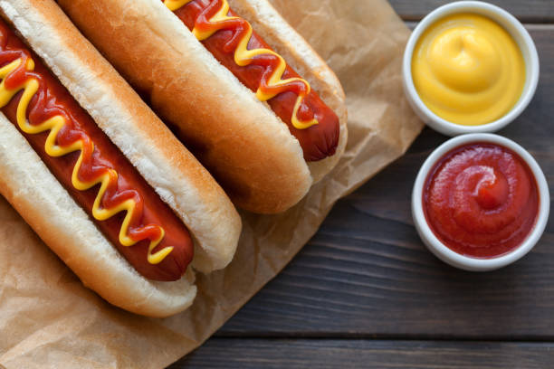

Home
Hot Dog Recipe

Classic Hot Dog
Grill or boil a juicy hot dog sausage, place it in a toasted bun, then top with mustard, ketchup, onions, and relish for a timeless treat.
Ingredients
- Hot Dog Sausage
- Hot Dog Bun
- Yellow Mustard
- Ketchup
- Diced Onions
- Sweet Relish
- Optional: Sauerkraut or Jalapeños
Steps
- Heat the sausage (grill, boil, or pan-fry)
- Toast the bun lightly
- Place the sausage inside the bun
- Add desired toppings
- Serve immediately while hot